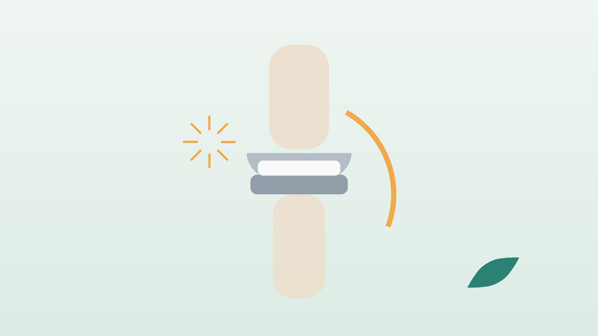

건강 칼럼 · 인천 인공관절 수술 후 한의원
인공관절 수술 뒤 무릎·고관절이 붓고 뻣뻣하다면, 회복 관리와 한방 치료

인공관절 수술 뒤, 회복이 더딘 걸까요?
- 수술한 지 석 달이 지났는데도 무릎이나 엉덩이 옆이 자주 붓는다
- 아침에 일어나면 수술한 다리가 굳어 첫걸음이 힘들다
- 재활 운동을 하고 나면 허벅지와 종아리가 몇 시간씩 쑤신다
- 무릎이 다 펴지지 않거나 굽히는 각도가 늘지 않는다
- 수술하지 않은 쪽 무릎과 허리까지 아파지기 시작했다
- 수술 뒤 입맛이 없고 잠을 설치며 기운이 떨어졌다
이 체크리스트는 진단 도구가 아닙니다. 붓기와 열감이 갑자기 심해졌다면 먼저 수술 병원에서 감염 여부를 확인하세요.
한의원보다 수술 병원·응급실이 먼저인 신호
- 수술 부위가 붉게 붓고 뜨거우며, 상처에서 진물이나 고름이 나거나 열이 난다 (감염 의심)
- 잘 지내다가 몇 달, 몇 년 뒤 갑자기 관절이 붓고 아프며 열이 난다 (늦게 오는 감염)
- 한쪽 종아리가 단단하게 붓고 누르면 아프다 (다리 혈전 의심)
- 갑자기 숨이 차고 가슴이 아프다 (폐 혈전 의심, 바로 119)
- 고관절 수술 뒤 '뚝' 하며 심하게 아프고 다리가 짧아지거나 돌아갔다 (탈구 의심)
- 넘어진 뒤 갑자기 체중을 싣고 디딜 수 없다 (주변 골절·부품 문제 의심)
인공관절 감염은 늦게 발견할수록 치료가 커지므로 수술한 병원에 곧바로 알리거나 응급실을 찾으세요. 혈전 예방을 위해 받은 항응고제는 담당 의사와 상의 없이 끊지 마세요.
수술 뒤 왜 붓고 뻣뻣할까요?
인공관절 수술에서는 관절 표면을 깎아 내고 새 부품을 끼우기 위해 주변 근육과 관절 주머니를 열었다가 닫습니다. 몸이 상처를 아물게 하는 동안 붓기와 열감은, 특히 무릎에서 수개월까지 이어질 수 있습니다.
- 수술 뒤 붓기: 혈관과 림프 흐름이 회복되는 동안 관절 주변과 종아리에 물이 고이고, 오래 서 있으면 더 붓습니다.
- 근육 약화: 허벅지 앞 근육(대퇴사두근)과 엉덩이 옆 근육이 수술 전부터 약해져 있었다면 걸음이 쉽게 지칩니다.
- 관절 굳음: 아파서 덜 움직이면 흉터 조직이 단단해져 무릎이 덜 펴지거나 덜 굽혀집니다.
- 보상 통증: 수술한 다리를 아끼느라 반대쪽 무릎, 허리, 발목에 무게가 몰립니다.
한의학은 수술 뒤 회복을 어떻게 보나요?
『황제내경 소문』 맥요정미론은 '무릎은 근의 집(膝者筋之府)'이라 하여, 무릎을 굽히고 펴는 힘을 힘줄과 근육의 상태와 연결해 보았습니다. 한의학에서는 큰 수술 뒤 남은 붓기와 통증을 어혈과 수습(水濕)이 머문 것으로, 쉽게 지치는 몸은 기혈이 상한 것으로 봅니다.
관절이 뜨겁고 붓는지, 물렁하게 처지며 붓는지, 붓기는 덜한데 힘이 없는지를 나누어 풀어 줄지 채워 줄지를 정합니다.
수술 뒤 회복은 어떤 유형일까?
감염과 부품 문제가 없다는 확인을 받은 뒤 함께 쓰는 한의학적 구분입니다.
1. 어혈수습(瘀血水濕) 멍과 붓기가 남은 유형
- 이런 분에게 많아요
- 수술한 지 몇 주에서 석 달 사이인 분
- 나타나는 모습
- 관절 주변이 팽팽하게 붓고 누르면 아프다
- 함께 오는 몸의 신호
- 저녁마다 종아리와 발등까지 부어오름
- 진찰에서 보이는 모습
- 멍 자국이 늦게 빠지고 피부가 당김
- 치료 방향
- 고인 어혈과 물을 함께 풀어내는 방향 (도홍사물탕 계열)
- 오늘부터 해 볼 것
- 하루 몇 번 누워서 다리를 베개 두 개 높이로 올려 두세요.
2. 기혈허약(氣血虛弱) 회복할 기운이 모자란 유형
- 이런 분에게 많아요
- 수술 뒤 체중과 입맛이 줄어든 분
- 나타나는 모습
- 재활 운동 뒤 근육이 오래 쑤시고 쉽게 지친다
- 함께 오는 몸의 신호
- 어지럼, 식은땀, 얕은 잠
- 진찰에서 보이는 모습
- 얼굴빛이 희고 허벅지 근육이 눈에 띄게 가늘어짐
- 치료 방향
- 기와 혈을 보태 상처 회복과 근력을 돕는 방향 (십전대보탕 계열)
- 오늘부터 해 볼 것
- 끼니마다 달걀·두부·생선 같은 단백질을 한 가지씩 드세요.
3. 간신휴손(肝腎虧損) 관절의 바탕이 약한 유형
- 이런 분에게 많아요
- 나이가 많거나 양쪽 관절이 모두 닳은 분
- 나타나는 모습
- 수술한 쪽도, 안 한 쪽도 시큰하고 오래 서기 어렵다
- 함께 오는 몸의 신호
- 허리가 함께 아프고 밤에 소변이 잦음
- 진찰에서 보이는 모습
- 골밀도가 낮다는 말을 들었고 다리 힘이 약함
- 치료 방향
- 간신을 보해 힘줄과 뼈를 튼튼히 하는 방향 (독활기생탕 계열)
- 오늘부터 해 볼 것
- 의자에 앉아 무릎 펴고 5초 버티기를 10번씩 해 보세요.
한의원에서는 어떻게 진찰하나요?
- 수술 정보: 수술 날짜와 부위, 수술 병원의 재활 지침과 자세 제한을 여쭙습니다.
- 붓기와 열감: 양쪽 둘레와 피부 온도를 비교하고, 감염이 의심되면 수술 병원 진료를 먼저 권합니다.
- 움직임과 걸음: 무릎을 펴고 굽히는 각도, 걸을 때 기우는 쪽, 반대쪽 다리와 허리 상태를 봅니다.
- 초음파: 관절 주변 근육과 힘줄의 붓기, 물 고임을 확인합니다. 인공관절 부품 상태는 수술 병원 X선으로 확인합니다.
침·약침·추나·한약 치료는 어떻게 하나요?
1. 침 치료
- 혈해(血海): 무릎뼈 안쪽 위 모서리에서 손가락 세 마디쯤 올라간 허벅지 안쪽의 볼록한 근육 위입니다.
- 족삼리(足三里): 무릎뼈 바로 아래 바깥쪽 오목한 곳에서 손가락 네 마디 아래, 정강이뼈 바깥 옆입니다.
- 풍시(風市): 똑바로 서서 팔을 내렸을 때 가운뎃손가락 끝이 허벅지 바깥에 닿는 곳입니다.
- 태계(太谿): 안쪽 복사뼈와 아킬레스힘줄 사이의 오목한 곳입니다.
인공관절이 들어 있는 관절 주머니 안쪽과 수술 흉터에는 침을 놓지 않고, 상처가 완전히 아문 뒤 주변 근육과 멀리 떨어진 혈을 씁니다. 붓기와 열이 가라앉은 뒤 뻣뻣한 허벅지에는 온열 요법을 시행합니다.
2. 약침·초음파 가이드 약침과 추나 요법
약침은 일반 약침과 초음파 가이드 약침을 모두 시행하며, 아픈 부위의 깊이와 주변 구조에 따라 진찰 후 골라 씁니다. 초음파 가이드 약침은 초음파 화면으로 바늘 끝을 확인하면서 놓는 방식입니다. 초음파로 허벅지와 엉덩이 근육, 힘줄의 붓기와 물 고임, 금속 부품과 관절 주머니의 위치를 확인하고, 관절 안으로는 들어가지 않도록 충분히 떨어진 근육과 힘줄 자리에만 바늘 끝이 닿도록 놓습니다. 수술한 다리를 아끼느라 골반과 허리가 틀어진 경우 진찰 후 추나 요법을 시행하며, 수술한 관절 자체에는 수술 의사가 괜찮다고 확인하기 전까지 비틀거나 당기는 힘을 주지 않습니다.
3. 한약
수술 초기에는 어혈과 붓기를 푸는 쪽, 몇 달이 지나도 기운이 없으면 기혈과 간신을 채우는 쪽으로 탕약을 처방합니다. 혈전 예방약, 진통제, 혈압약처럼 드시는 약은 알려 주시면 확인해 처방합니다. 임신 중이거나 간·신장 질환, 출혈이 잘 멈추지 않는 병력이 있다면 진료 때 꼭 알려 주세요. 확인 후 안전한 약재로 처방합니다.
관리는 어떤 순서로 진행되나요?
- 안전 확인 감염·혈전·부품 문제가 없는지 수술 병원 확인을 먼저 받습니다.
- 붓기 가라앉히기 침·약침과 한약으로 주변 근육의 통증과 붓기를 줄입니다.
- 각도와 걸음 되찾기 수술 병원 재활 지침에 맞춰 관절 각도를 늘리고 걸음 균형을 바로잡습니다.
- 근력과 일상 복귀 허벅지·엉덩이 근력을 기르고 반대쪽 관절과 허리까지 함께 관리합니다.
기간과 횟수는 증상이 얼마나 오래되었는지, 동반 증상이 무엇인지에 따라 달라지며, 진찰 후 개인별로 안내합니다.
인공관절을 오래 쓰기 위한 생활 관리
- 재활 운동 지키기: 수술 병원에서 배운 운동은 아픈 날에도 양만 줄여 매일 이어 갑니다.
- 고관절 자세 주의: 고관절 수술 뒤에는 수술 방법에 따라 다리 꼬기, 낮은 의자, 깊이 숙이기가 제한될 수 있으니 수술 병원 안내를 꼭 따르세요.
- 붓기 관리: 운동 뒤 붓고 열이 나면 수건으로 감싼 얼음팩을 15분 대고 다리를 높여 둡니다.
- 넘어짐 예방: 욕실에 미끄럼 방지 매트와 손잡이를 두고, 밤에는 화장실 가는 길에 불을 켜 둡니다.
- 감염 예방: 치과 치료나 다른 시술 전에는 인공관절이 있다고 미리 알리고, 몸에 상처나 염증이 생기면 빨리 치료하세요.
다른 진료가 함께 필요한 경우
- 석 달이 지나도 무릎 각도가 늘지 않으면 수술 병원에서 관절 굳음 치료를 받으세요.
- 관절 통증이 갑자기 다시 심해지면 X선과 혈액 검사로 부품 풀림과 감염을 확인하세요.
- 골다공증이 있다면 인공관절 주변 골절을 막기 위해 골밀도 관리를 함께 받으세요.
자주 묻는 질문 Q&A
- Q1. 인공관절 수술을 받고 얼마 뒤부터 한방 치료가 가능한가요?
- 실밥을 빼고 상처가 완전히 아문 뒤, 수술 병원에서 감염 같은 문제가 없다고 확인되면 주변 근육 치료부터 시작합니다.
- Q2. 인공관절 주변에 침을 맞아도 괜찮나요?
- 관절 주머니 안과 흉터에는 놓지 않고, 초음파로 거리를 확인하며 떨어진 근육에 놓습니다.
- Q3. 무릎 붓기는 언제까지 가나요?
- 사람마다 다르지만 무릎은 수개월 동안 붓기와 열감이 오르내릴 수 있습니다. 갑자기 심해지면 감염 확인이 먼저입니다.
- Q4. 재활 운동이 너무 아픈데 쉬어도 되나요?
- 완전히 쉬면 관절이 굳기 쉽습니다. 양을 줄여서라도 매일 이어 가고, 통증이 심하면 수술 병원과 운동량을 조절하세요.
- Q5. 수술 안 한 쪽 무릎도 아파요.
- 수술한 다리를 아끼느라 무게가 몰린 경우가 많아 반대쪽과 허리도 함께 봅니다.
- Q6. 한약을 먹으면 혈전 예방약과 부딪치지 않나요?
- 드시는 약을 알려 주시면 출혈 위험을 높일 수 있는 약재를 확인해 빼고 처방합니다.
- Q7. 체중 관리도 중요한가요?
- 몸무게가 늘면 새 관절 부품과 반대쪽 관절에 실리는 부담이 커집니다. 무리한 굶기보다 단백질을 챙기며 천천히 줄이세요.
- Q8. 집에서 지압할 곳이 있나요?
- 무릎 아래 바깥쪽 족삼리혈을 엄지로 5초씩 천천히 눌러 주세요. 수술 흉터 위는 누르지 마세요.
문원열 대표원장한의사 · 365스마일한의원
임상 경력 15년, 인천 서구 가정동에서 개원 후 10년째 진료하고 있으며, FCST 턱관절학회·연부조직학회·침도학회 등에서 활동합니다. 아픈 곳만이 아니라 증상의 원인을 찾아 진료합니다.
진료 안내
- 진료시간
- 평일 09:00~20:00 (점심시간 13:00~14:00, 접수 마감 19:30)
토·일·공휴일 09:00~15:00 (접수 마감 14:30) - 주소
- 인천광역시 서구 가경주로 46, 2층 (가정동)
인천2호선 가정중앙시장역 인근
영상으로 길 안내 보기 → - 주차
- 한의원 건물 바로 앞 1층 도원주차장
- 예약
- 예약 바로가기 또는 전화 예약
진료시간은 사정에 따라 바뀔 수 있으니 방문 전 전화로 확인해 주세요.
참고 자료
- NICE guideline NG157. Joint replacement (primary): hip, knee and shoulder, 2020
- 『황제내경 소문(素問)』 맥요정미론(脈要精微論)
- 질병관리청 국가건강정보포털 — 원문
※ 이 글은 일반적인 건강 정보이며, 개인의 상태에 따라 치료 방법과 결과는 다를 수 있습니다. 정확한 진단과 치료는 진료를 통해 결정됩니다. 침·약침 시술 후 드물게 멍, 통증 등이 생길 수 있습니다.